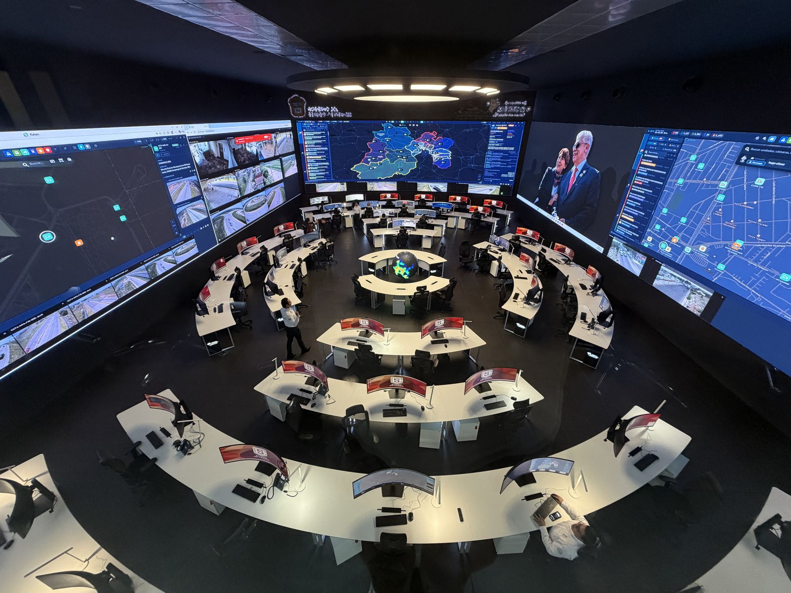
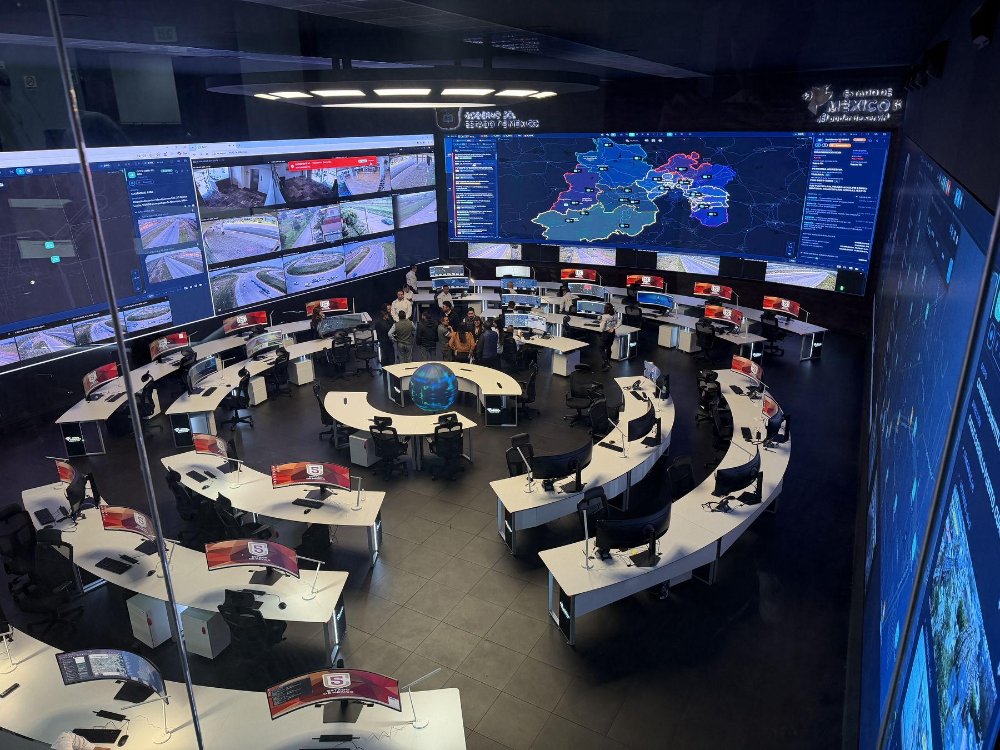
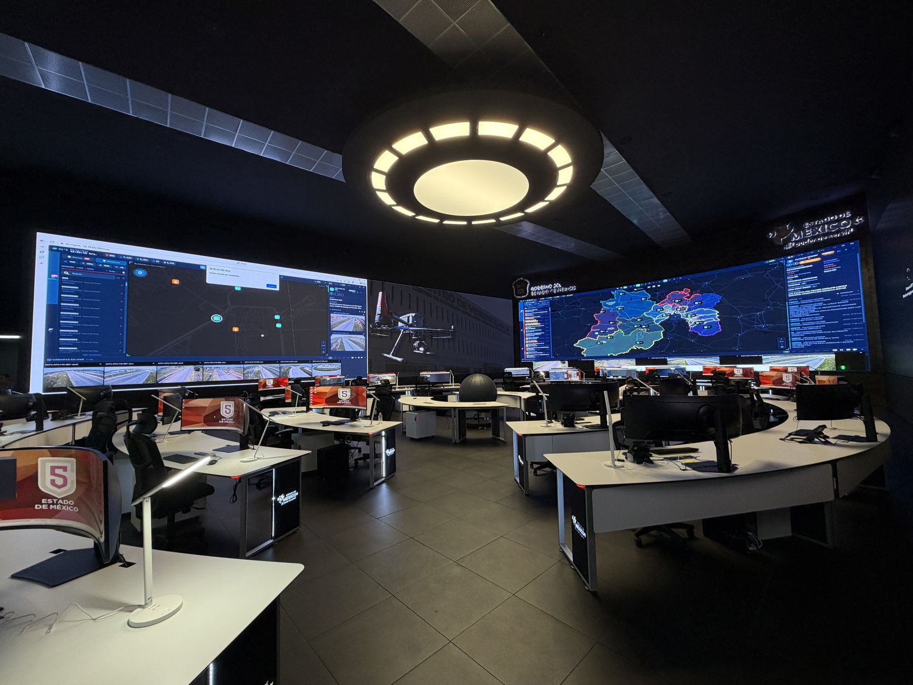
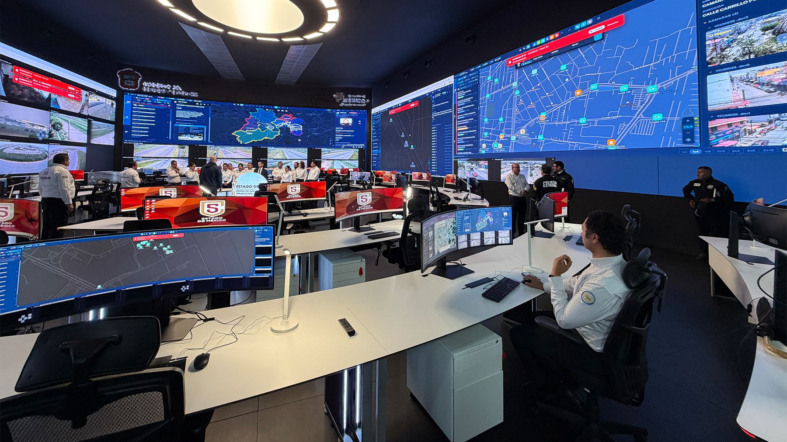
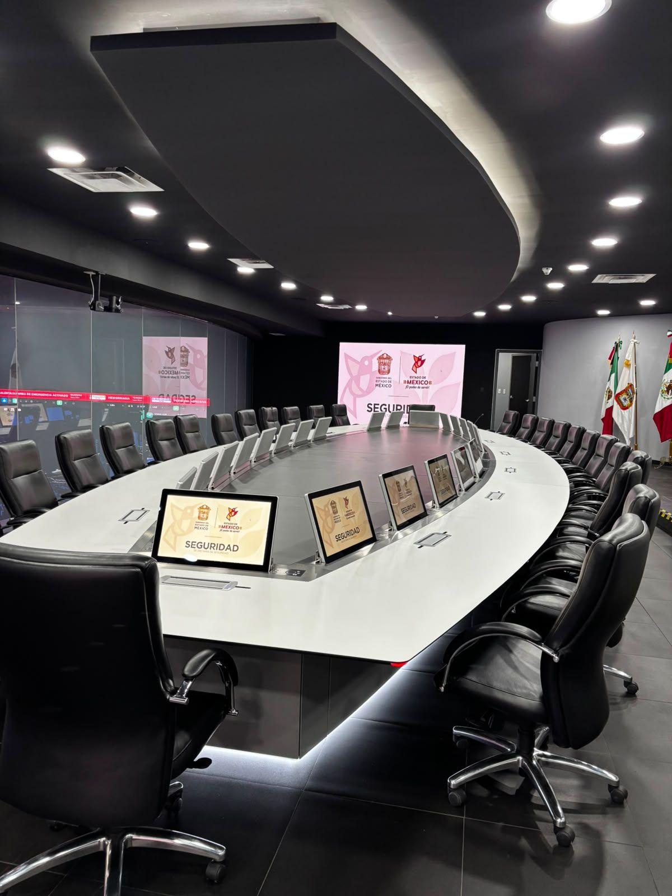

Casos de éxito
El C5 del Estado de México renueva su centro de mando en colaboración con POP Media Technology
Con el reto de aprovechar al máximo el potencial de la inteligencia artificial en la seguridad pública, la Secretaría de Seguridad del Estado de México emprendió en 2026 la renovación integral del C5 Toluca, su Centro de Control, Comando, Comunicación, Cómputo y Calidad. El proyecto se llevó a cabo de la mano de POP Media Technology.
POP Media Technology (POP MT) transformó los espacios de visualización del C5 para responder a las nuevas necesidades de monitoreo, análisis y toma de decisiones: un proyecto integral, desde el muro de video hasta el mobiliario, ejecutado en tan solo dos meses y medio.


El C5 es el punto desde donde se monitorean las cámaras del estado, se coordinan los cuerpos de emergencia y se toman decisiones en tiempo real. Para que la inteligencia artificial y el análisis de datos rindieran todo su potencial, la operación necesitaba ver más, ver mejor y ver todo al mismo tiempo.
POP MT diseñó una solución que integra visualización LED de gran formato, control de contenidos sobre IP, audio profesional e interiorismo, coordinando a siete aliados tecnológicos y de diseño en un solo proyecto llave en mano.
Renovación C5 Toluca
La Secretaría de Seguridad necesitaba un centro de mando a la altura de una seguridad basada en datos: que los operadores pudieran consultar de forma simultánea todas las fuentes de información, que los equipos se coordinaran sin fricción y que los espacios fueran cómodos para jornadas de trabajo continuas. POP MT actuó como punto central de contacto entre todas las partes y se encargó del diseño e integración de cada componente.
Muros de video LED
Pantallas LED Leyard de última generación que aumentan hasta tres veces el área de visualización y permiten consultar de manera simultánea toda la información necesaria para la operación.
Control de contenidos sobre IP
Un controlador de muro IP de VuWall permite una gestión avanzada de contenidos y fuentes de información: cámaras, mapas, tableros y aplicaciones, distribuidos donde la operación los necesita.
Audio, voceo y automatización
Procesamiento de audio, voceo y automatización QSC, con micrófonos Sennheiser: una solución profesional diseñada para facilitar la coordinación entre los equipos de trabajo.
Interiorismo y mobiliario
El diseño de interiorismo, desarrollado por DWO Design, creó espacios funcionales, eficientes y cómodos para los operadores durante sus jornadas de trabajo.
Sala de Crisis
Monitores pop-up de Arthur Holm que emergen de la mesa solo cuando se necesitan, integrando la tecnología de manera discreta y funcional.
Puestos de operador
Monitores curvos Samsung de 49” que permiten visualizar en una sola pantalla la información que anteriormente requería dos o hasta tres monitores.
Este proyecto fue el resultado del compromiso y conocimiento de profesionales que colaboran en Pop Media, más el apoyo de los clientes y nuestros aliados tecnológicos, que nos permiten entregar soluciones funcionales para la ciudadanía y con efecto wow.
Conoce el proyecto



Mejor Proyecto de AV Instalado CALA Awards 2026

La Renovación del C5 Toluca fue distinguida como el Mejor Proyecto de AV Instalado en los CALA Awards 2026, entregados por la revista AVI Latinoamérica, que reconocen la creatividad, la innovación y las tecnologías audiovisuales más sobresalientes de la región.
El premio fue recibido por Gabriel López, director comercial de POP Media Technology, y el Ing. Aguirre, en representación de todo el equipo que hizo posible el proyecto. Para POP MT, empresa mexicana con más de 20 años de experiencia en integración de audio y video profesional y especialidad en el diseño de centros de monitoreo, este reconocimiento confirma su lugar entre los integradores de referencia en Latinoamérica.
Conoce más sobre el premioUn mensaje de Gabriel López
“Agradecemos a Latin Press por otorgarnos el premio al Mejor Proyecto AV del 2026. Gracias a todos los que formamos parte de Pop Media Technology, ya que con su entusiasmo y dedicación logramos proyectos exitosos y clientes satisfechos.”
Ficha del proyecto
¿Tu centro de mando necesita evolucionar?
Diseñamos e integramos centros de monitoreo llave en mano, del muro de video al último cable.